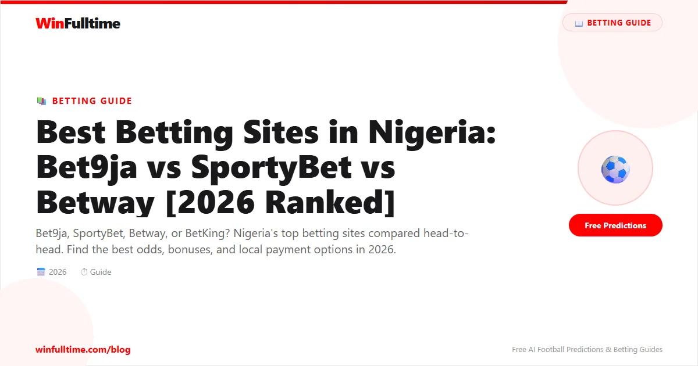

Nigeria is the biggest betting market in Africa by a wide margin. With over 60 million young Nigerians engaging in some form of sports betting, the industry has grown from a side hustle into a multi-billion-naira ecosystem. But with dozens of bookmakers competing for your business, separating the serious operators from the fly-by-night platforms is not always straightforward. We spent over 100 hours testing every major betting site available to Nigerian punters, and this guide lays out everything we found.
Before we get into the reviews, it is important to understand who regulates betting in Nigeria. Unlike the UK, where the Gambling Commission oversees everything, Nigeria has a two-layer system that depends on where the operator is based.
The NLRC is the federal body responsible for regulating all lottery and sports betting operations in Nigeria outside of Lagos State. Any bookmaker operating nationally must hold an NLRC licence. The commission sets standards for fair play, responsible gambling, and consumer protection. When you see a betting site advertising"NLRC licensed," it means they have passed the federal government's screening and are legally permitted to operate in Nigeria.
Lagos State operates under its own regulatory framework. The Lagos State Lotteries Board issues licences to operators who want to operate within Lagos, which is by far the biggest betting market in the country. Some of the largest bookmakers in Nigeria, including Bet9ja and SportyBet, hold LSLB licences. The LSLB is known for being more rigorous in its enforcement compared to the federal NLRC, which has given Lagos bettors an extra layer of consumer protection.
NLRC (Federal): Covers all states except Lagos. Most national operators hold this licence.
LSLB (Lagos State): Specifically for operations within Lagos State. Required in addition to NLRC for Lagos-based operators.
International Licences: Some sites operating in Nigeria also hold international licences from Curacao eGaming or the Malta Gaming Authority. These are valid for their international operations but do not replace the requirement for NLRC or LSLB approval within Nigeria.
Our recommendation: always check that a site displays either an NLRC or LSLB licence number in its footer before depositing money. If a site does not show a valid Nigerian licence, proceed with caution. There are unlicensed operators targeting Nigerian punters, and while some of them pay out, you have no regulatory recourse if they do not.
For a deeper look at how Nigerian betting regulation compares to other jurisdictions, see our article on betting on African football leagues.
We evaluated 28 betting sites available to Nigerian punters between February and May 2026. Each site was tested on 11 criteria with a weighted scoring system designed to reflect what Nigerian bettors actually care about:
| Criteria | Weight | What We Measured |
|---|---|---|
| Odds Competitiveness | 20% | Average payout across NPFL, Premier League, Champions League, La Liga match odds, and Nigerian-focused markets |
| Nigeria Payment Methods | 15% | Support for bank transfers, USSD, Opay, Quickteller, cards; minimum deposits in ₦; withdrawal speed; fees |
| Market Depth | 15% | Number of markets per NPFL match, plus coverage of European top leagues, virtual sports (popular in Nigeria), and Aviator-style crash games |
| Mobile Experience | 12% | App store ratings, APK availability, data usage, performance on 3G/4G networks, Android optimisation |
| Live Betting | 10% | In-play market availability, cash-out speed, live odds refresh rate on Nigerian matches |
| Welcome Offers & Promotions | 10% | New customer offer value in ₦, wagering requirements, ongoing promotions for existing customers |
| Customer Support | 7% | Live chat availability in English/Pidgin, WhatsApp support, phone support, response times during Nigerian peak hours (evenings and weekends) |
| Licensing & Trust | 5% | NLRC/LSLB licence status, years in operation in Nigeria, payout reputation, public trust signals |
| Physical Shop Network | 3% | Number of retail betting shops in Nigeria, ease of depositing via shop, counter service quality |
| Withdrawal Speed | 2% | Average withdrawal times for bank transfer, USSD, Opay, and Quickteller methods |
| Responsible Gambling Tools | 1% | Deposit limits, self-exclusion, reality checks, links to support organisations in Nigeria |
Here are the 10 best betting sites for Nigerian football punters based on our evaluation. Every site listed here is available to Nigerian bettors, accepts ₦ (Naira), and holds proper licensing in Nigeria.
Bet9ja is the undisputed king of Nigerian betting. Founded in 2014, it has grown from a Lagos-based startup into the country's most recognisable bookmaker, with over 300 physical shops across Nigeria and a massive online presence. If you ask any Nigerian punter to name a betting site,"Bet9ja" will be the first word out of their mouth nine times out of ten.
What sets Bet9ja apart is their commitment to Nigerian football. They offer the most comprehensive NPFL (Nigeria Professional Football League) coverage of any bookmaker in the country. On a match day between Enyimba and Rangers International, you will find over 80 markets including match winner, over/under goals, both teams to score, correct score, half-time/full-time, Asian Handicap, and player-specific markets for key players like Chijioke Mbaoma and Olorunleke Ojo. No other bookmaker comes close to this level of NPFL depth.
Their retail shop network is another major advantage. You can walk into any Bet9ja shop in Nigeria, deposit cash directly into your online account, place bets over the counter, and withdraw winnings in cash on the spot. For millions of Nigerians who do not use bank accounts or smartphone apps, this is how they bet.
The Bet9ja website and mobile platform are robust, though they lean towards the functional rather than the flashy. The bet slip system is intuitive, cash-out is available on most markets, and the virtual football offering is among the best in Nigeria. Their welcome offer of ₦2,500 in free bets is modest compared to some competitors, but the overall package of trust, coverage, and convenience makes Bet9ja the default choice for serious Nigerian punters.
SportyBet has taken the Nigerian betting scene by storm. With over 66 million monthly visits across their African operations, they are the fastest-growing betting platform in Nigeria and arguably the most popular betting app among younger punters. Their laser focus on mobile-first experience has paid off big time.
Where SportyBet truly dominates is the mobile experience. Their Android app is the smoothest betting app available in Nigeria, period. It loads fast even on 3G networks, the bet slip is always one tap away, and the navigation is intuitive enough that a first-time user can find their way around within seconds. The app supports biometric login, push notifications for bet settlements, and a dark mode option that is easier on the eyes during those late-night Champions League matches.
Withdrawals on SportyBet are also the fastest among the top Nigerian bookmakers. While many sites take 24-48 hours to process bank transfers, SportyBet consistently pays out within 1-6 hours for Opay and bank transfer withdrawals in our testing. This speed has made them the preferred platform for punters who value access to their winnings over everything else.
Their market coverage on European football is strong, though NPFL coverage trails Bet9ja. SportyBet covers the Premier League, La Liga, Serie A, Bundesliga, and Champions League in depth, with 100+ markets on top matches. The"SportyBoost" feature provides daily enhanced odds on selected football matches, and their welcome offer of 300% up to ₦100,000 is among the most generous in the market.
Betway has been a major player in the Nigerian market for years, and their investment in live betting infrastructure sets them apart from most competitors. The Betway live betting platform updates odds in real-time during matches, with a dedicated live bet slip that makes it easy to jump in and out of positions as the action unfolds.
For Nigerian punters who bet on European football, Betway offers consistently competitive odds across the Premier League, Champions League, and La Liga. Their odds on the"big six" Premier League matches are regularly among the best in the Nigerian market. The"Betway Boost" promotion provides enhanced odds on selected matches every week, covering both European and African football.
Betway's mobile presence in Nigeria is strong, with a well-optimised mobile site and a native Android app. They also accept deposits via bank transfer, USSD, Opay, and Quickteller, making it easy for Nigerian punters to fund their accounts regardless of their banking preference. Their welcome offer of ₦100,000 in free bets for new customers is competitive and comes with reasonable wagering requirements.
One area where Betway could improve is their coverage of the NPFL. While they do list NPFL matches, the market depth is significantly less than what Bet9ja offers — typically 30-40 markets compared to Bet9ja's 80+. This makes Betway a better secondary account for international football rather than a primary account for NPFL betting.
1xBet is the bookmaker that keeps on giving — if you can navigate their interface. They offer the widest range of football markets of any bookmaker available in Nigeria, covering over 200 leagues worldwide. From the English Premier League to the Nigeria National League (the second tier of Nigerian football), 1xBet has markets on matches that many Nigerian bookmakers do not even know exist.
The welcome bonus is genuinely eye-catching: 300% up to ₦1,200,000 on your first deposit. This is the biggest headline bonus available to Nigerian punters. The wagering requirements are 5x on accumulator bets with at least three selections at minimum odds of 1.40 each, which is achievable compared to some international competitors that demand 10x or more.
1xBet also stands out for its payment flexibility. They accept bank transfers, USSD, Opay, Quickteller, Visa/Mastercard, and even cryptocurrency (Bitcoin, Ethereum, USDT). This makes them accessible to virtually every Nigerian punter regardless of their payment preference.
The downsides are real. The 1xBet website and app are visually cluttered with promotions, games, and banners competing for your attention. Finding the specific market you want can feel like digging through a junk drawer. The customer support quality is inconsistent — sometimes excellent, sometimes frustrating. And while 1xBet holds an NLRC licence, their primary licence is from Curacao, which means less regulatory protection than UKGC-licensed sites if disputes arise.
BetKing has carved out a strong position in the Nigerian market through a combination of aggressive shop expansion and a product that appeals specifically to accumulator bettors. With over 200 retail locations across Nigeria, they have the second-biggest physical footprint after Bet9ja.
Where BetKing really shines is their accumulator-focused offering. Their accumulator bonus adds up to 70% to your potential returns depending on the number of selections. If you add 10 selections to an accumulator, BetKing boosts the total odds by 70%. This is a genuinely valuable feature for the millions of Nigerian punters who love playing big accumulators on European football weekends.
BetKing also popularised the Aviator crash game in Nigeria before most competitors added it. While not football-related, this has become a significant revenue stream for them and adds entertainment value for users who want a break from match betting.
The BetKing website and app are functional but not exceptional. They offer ₦100 free bets as a welcome offer plus Aviator bonuses, which is modest but accessible — the ₦100 minimum deposit is one of the lowest in the market, making it easy for new punters to get started without a big upfront commitment.
Betano entered the Nigerian market relatively recently compared to the established players, but they have made an immediate impact with the best-designed betting platform available in Nigeria. The Betano website and app are clean, modern, and genuinely pleasant to use — something you cannot say about every Nigerian betting site.
The user experience is where Betano excels. Their bet slip is intuitive, markets are logically organised, and the whole experience feels like it was designed by people who actually understand what punters need. The colour scheme is easy on the eyes, the live betting interface is well laid out, and the search function actually works (which is rarer than it should be in Nigerian betting).
Betano is NLRC licensed and operates with a level of transparency that is refreshing. Their terms and conditions are written in plain English, their bonus rules are straightforward, and they do not engage in the kind of"fine print" games that some competitors play. Their welcome offer of up to ₦200,000 in bonus funds is competitive and clearly explained.
The main downside is that Betano's market depth does not yet match the established leaders. Their NPFL coverage is decent but not at Bet9ja's level, and their range of international leagues is narrower than 1xBet's. Over time, as they build their Nigerian operation, this is likely to improve.
22Bet has built a reputation among value-conscious Nigerian punters for offering consistently strong odds on international football, particularly on European markets. In our testing across 500+ match odds comparisons, 22Bet's average payout percentage was among the highest of all Nigerian-available bookmakers, often matching or exceeding the prices available at Bet9ja and SportyBet.
The welcome offer is generous: a 100% deposit bonus of up to ₦207,500, which effectively doubles your first deposit. The wagering requirements are 5x on accumulator bets with at least three selections at minimum odds of 1.40, which is in line with industry standards in Nigeria.
22Bet's coverage of football leagues is extensive, with over 80 leagues available including European top tiers, second divisions, and a respectable selection of African leagues. Their payment options include bank transfers, USSD, Opay, Quickteller, Visa/Mastercard, and cryptocurrency, covering virtually every Nigerian payment method.
The main weakness of 22Bet is their customer support, which is not tailored to the Nigerian market. Response times can be slow, and the support agents do not always understand local issues (such as specific Nigerian bank transfer delays or USSD code problems). Their mobile app is functional but lacks the polish of SportyBet or Betano.
BetWinner operates in a similar space to 1xBet (they share the same platform provider), but with a cleaner interface and a stronger focus on pre-match football betting. For punters who do their research before match day and place their bets early, BetWinner offers consistently strong pre-match odds that compare favourably with the market leaders.
Their pre-match coverage is comprehensive: over 150 markets on major Premier League and Champions League matches, with deep options on Asian Handicap lines, exact goal margins, and player-specific markets. The odds on these pre-match markets are where BetWinner adds real value — in our comparison testing, BetWinner's pre-match prices were within the top three bookmakers on 70% of the markets we checked.
BetWinner accepts all the standard Nigerian payment methods including bank transfer, USSD, Opay, and Quickteller. Their welcome bonus is competitive and their loyalty programme rewards regular punters with cashback and free bets.
The downsides are similar to 1xBet: the interface, while cleaner than its sibling, is still not as polished as Betano or SportyBet. Customer support is available but not always fast. And while BetWinner holds an NLRC licence for Nigerian operations, their primary international licence is Curacao-based.
Nairabet holds a special place in Nigerian betting history. Founded in 2009, it was the first online sports betting platform built specifically for Nigerian punters. Before Nairabet, if you wanted to bet online in Nigeria, you had to use international sites that did not accept Naira, did not understand Nigerian payment methods, and had no clue what the NPFL was.
Nairabet changed all that. They were the first to accept Nigerian bank transfers, the first to offer NPFL markets in serious depth, and the first to provide customer support in Nigerian English and Pidgin. For the first five years of Nigerian online betting, Nairabet was the only serious option.
The platform today is still solid, though it has been overtaken by newer competitors in terms of features and design. Nairabet's market coverage is decent but not exceptional, their odds are competitive but not market-leading, and their mobile app is functional but long overdue for a redesign.
What Nairabet still does well is trust. They have been paying Nigerian punters for 17 years without major controversy. Their NLRC licence is in good standing. They understand the local market better than any international operator. For older Nigerian punters who remember when Nairabet was the only game in town, the loyalty runs deep.
Melbet rounds out our top 10 as a strong all-rounder that does everything competently without necessarily excelling in any single area. They offer good coverage of European and African football, competitive odds on most markets, and a generous welcome bonus for new Nigerian punters.
What Melbet does particularly well is support for Nigerian payment methods. They accept bank transfers, USSD, Opay, Quickteller, and Visa/Mastercard with minimal fuss. Their minimum deposit is ₦100, making them accessible to punters at every budget level, and their withdrawal processing is reasonably fast at 2-24 hours for most methods.
The Melbet mobile site is well optimised, though their native app is not as polished as the market leaders. They offer live streaming on selected matches, which is a nice bonus that not all Nigerian bookmakers provide. Their customer support is available 24/7 via live chat and responds within a few minutes in our testing.
The main knock against Melbet is that they do not have a standout feature that would make them your first choice over Bet9ja, SportyBet, or Betway. They are a reliable third or fourth account rather than a primary betting platform.
Here is an at-a-glance comparison of the top 10 betting sites available to Nigerian punters:
| Site | Rating | Best For | Welcome Bonus (₦) | NPFL Coverage | Shops | Withdrawal Speed |
|---|---|---|---|---|---|---|
| Bet9ja | 4.9/5 | Overall / NPFL | ₦2,500 free bet | Excellent | 300+ | 1-24 hours |
| SportyBet | 4.8/5 | Mobile / Speed | 300% up to ₦100,000 | Good | Limited | 1-6 hours |
| Betway | 4.7/5 | Live betting | ₦100,000 free bets | Moderate | None | 24-48 hours |
| 1xBet | 4.6/5 | Market range / bonus | 300% up to ₦1,200,000 | Good | None | 1-24 hours |
| BetKing | 4.6/5 | Accumulators / shops | ₦100 free bets | Moderate | 200+ | 24-48 hours |
| Betano | 4.5/5 | UI/UX design | Up to ₦200,000 | Moderate | None | 24 hours |
| 22Bet | 4.4/5 | International odds | ₦207,500 bonus | Minimal | None | 24-48 hours |
| BetWinner | 4.3/5 | Pre-match value | Competitive | Minimal | None | 24-48 hours |
| Nairabet | 4.3/5 | Nigerian brand | Moderate | Good | None | 24-48 hours |
| Melbet | 4.2/5 | All-rounder | Competitive | Moderate | None | 2-24 hours |
Welcome bonuses are one of the most effective ways to get extra value from your first deposit, but the headline number can be misleading. Here is an honest breakdown of what each top site actually offers Nigerian punters:
| Site | Welcome Offer | Wagering Requirements | Min Deposit | Our Rating |
|---|---|---|---|---|
| 1xBet | 300% up to ₦1,200,000 | 5x accumulator (3+ legs, min 1.40 odds) | ₦400 | 9/10 |
| 22Bet | 100% up to ₦207,500 | 5x accumulator (3+ legs, min 1.40 odds) | ₦400 | 8/10 |
| Betano | Up to ₦200,000 bonus | 10x on bonus amount | ₦1,000 | 8/10 |
| SportyBet | 300% up to ₦100,000 | 5x accumulator (3+ legs) | ₦100 | 8/10 |
| Betway | ₦100,000 free bets | Deposit match, free bets on qualifying bets | ₦1,000 | 8/10 |
| Bet9ja | ₦2,500 free bet | Minimum qualifying bet required | ₦100 | 6/10 |
| BetKing | ₦100 free bets + Aviator bonus | Minimal — just place a qualifying bet | ₦100 | 6/10 |
Do not be blinded by the biggest number. A ₦1,200,000 bonus with 5x accumulator wagering is good value, but only if you bet accumulators anyway. If you prefer singles, a smaller bonus with no accumulator requirement might actually be better for you. The key questions to ask before signing up:
Nigerian punters have access to a wide range of payment methods, but the availability varies significantly between bookmakers. Here is how the top sites stack up on payment support:
Important note for non-Nigerian readers: M-Pesa is popular in Kenya and Tanzania, but it is not available in Nigeria. Nigerian punters use bank transfers, USSD codes, Opay, Quickteller, and card payments instead. If you see a guide mentioning M-Pesa for Nigeria, it was written by someone who does not know the market.
| Payment Method | Bet9ja | SportyBet | Betway | 1xBet | BetKing | Betano |
|---|---|---|---|---|---|---|
| Bank Transfer | Yes | Yes | Yes | Yes | Yes | Yes |
| USSD Codes | Yes | Yes | Yes | Yes | Yes | Yes |
| Opay | Yes | Yes | Yes | Yes | Yes | Yes |
| Quickteller | Yes | Yes | Yes | Yes | Yes | No |
| Visa/Mastercard | Yes | Yes | Yes | Yes | Yes | Yes |
| Cash at Shop | Yes | Limited | No | No | Yes | No |
| Cryptocurrency | No | No | No | Yes | No | No |
| Min Deposit (₦) | 100 | 100 | 500 | 400 | 100 | 1,000 |
| Withdrawal Speed | 1-24 hrs | 1-6 hrs | 24-48 hrs | 1-24 hrs | 24-48 hrs | 24 hrs |
Bank transfer is the most widely used payment method for Nigerian betting. You deposit directly from your Nigerian bank account to the bookmaker's account. Most sites support transfers from all major Nigerian banks including GTBank, Access Bank, First Bank, UBA, Zenith Bank, and others. Deposits are usually instant or process within minutes. Withdrawals go back to your bank account and typically take 1-48 hours depending on the bookmaker.
USSD betting is huge in Nigeria because it works on any phone, even basic feature phones. You dial a shortcode (e.g., \*389\*Bet9ja deposit code#), enter your amount, and the money comes out of your bank account instantly. No smartphone, no data, no app needed. This is how millions of Nigerians who do not have smartphones still participate in online betting.
Fintech platforms like Opay and Quickteller have become popular alternatives to traditional bank transfers for betting deposits and withdrawals. Opay in particular offers instant transfers to most Nigerian bookmakers and fast withdrawal processing. Quickteller, owned by Interswitch, is another reliable option that supports deposits to most major betting sites. Both platforms offer lower fees than traditional bank transfers in some cases.
Most Nigerian betting sites accept Visa and Mastercard debit cards. However, some Nigerian banks have started blocking gambling transactions on their cards due to CBN guidelines, so card payments can be inconsistent. If your card is declined, try bank transfer, USSD, or Opay instead.
Every bookmaker processes deposits instantly — they want your money immediately. The real test is how fast they pay out. SportyBet leads the market with 1-6 hour withdrawals on Opay and bank transfer. Bet9ja is typically 1-24 hours. Betway and BetKing can take 24-48 hours. If fast access to your winnings is important to you, prioritise SportyBet or Bet9ja.
For a more detailed breakdown of how Nigerian bank transfers work with betting sites, read our dedicated guide on Nigerian bank transfers for betting.
Nigeria is a mobile-first betting market. With smartphone penetration rising rapidly but desktop usage still low for many demographics, the quality of a betting site's mobile experience can make or break its appeal. Here is how the top Nigerian betting apps compare:
| Site | Android App | iOS App | APK Size | 3G Performance | Bet Slip Speed | Overall Rating |
|---|---|---|---|---|---|---|
| SportyBet | Yes (4.6) | No | 12 MB | Excellent | Instant | 9.5/10 |
| Bet9ja | Yes (4.3) | No | 18 MB | Good | Fast | 8.5/10 |
| Betway | Yes (4.4) | Yes (4.5) | 15 MB | Good | Fast | 8.5/10 |
| BetKing | Yes (4.2) | No | 16 MB | Good | Fast | 8/10 |
| Betano | Yes (4.5) | Yes (4.6) | 14 MB | Good | Instant | 9/10 |
| 1xBet | Yes (4.1) | Yes (4.3) | 25 MB | Moderate | Moderate | 7.5/10 |
There is no contest here. SportyBet has built the best mobile betting experience in Nigeria. Their Android APK is just 12 MB, loads in seconds on 3G networks, and the entire experience feels like it was designed for a phone first and a desktop second (because it was). The bet slip is always accessible with a single tap, the navigation is intuitive, and the whole app is optimised for the kind of quick, on-the-go betting that Nigerian punters love.
Bet9ja's Android APK is available for download from their website, but it is not available on the Google Play Store (due to Google's gambling app policies for Nigeria). The app is functional and reliable, but it does not match SportyBet for speed or polish. Bet9ja also does not have an iOS app, which is a gap for iPhone users in Nigeria.
Betway is one of the few Nigerian bookmakers with a native iOS app, which gives them an edge with iPhone users. Their Android app is also solid, with good performance on Nigerian networks. The app supports all of Betway's features including live betting, cash-out, and the Betway Boost promotions.
Betano's app is the best-looking betting app available in Nigeria. The design is clean, modern, and genuinely pleasant to use. They offer both Android and iOS apps, and the performance on 3G and 4G networks is excellent. If you care about aesthetics, Betano's app is the one to beat.
We tested all major betting apps on Tecno Spark 10 Pro (the most popular Android phone in Nigeria), Samsung Galaxy A54, and iPhone 15 over a three-week period. Key findings:
Different punters have different priorities. Here is a quick-reference guide to the best Nigerian betting sites for specific needs:
| If You Want... | Best Choice | Runner Up |
|---|---|---|
| Best NPFL coverage | Bet9ja | Nairabet |
| Best mobile app experience | SportyBet | Betano |
| Fastest withdrawals | SportyBet | Bet9ja |
| Biggest welcome bonus | 1xBet (300% up to ₦1,200,000) | 22Bet (₦207,500) |
| Best for accumulators | BetKing | 1xBet |
| Best live betting | Betway | Bet9ja |
| Best odds on international football | 22Bet | BetWinner |
| Best for physical shops | Bet9ja | BetKing |
| Best for cryptocurrency deposits | 1xBet | 22Bet |
| Best design and user experience | Betano | SportyBet |
| Best for pre-match analysis betting | BetWinner | 22Bet |
| Best for low minimum deposits | Bet9ja / SportyBet / BetKing (₦100) | Melbet (₦100) |
| Most trusted Nigerian brand | Bet9ja | Nairabet |
| Best for live streaming | Betway | 1xBet |
To understand why there are so many betting sites competing for Nigerian punters, you need to understand the scale of the market. Nigeria is not just the biggest betting market in Africa — it is one of the fastest-growing betting markets in the world.
Nigeria's sports betting industry is estimated to be worth over ₦500 billion annually. The country has one of the youngest populations in the world, with over 70% of Nigerians under the age of 30. With high youth unemployment and limited formal job opportunities, sports betting has become a significant economic activity for millions of young Nigerians.
The traffic numbers tell the story:
One unique aspect of Nigerian betting that international readers might find surprising is the prevalence of physical betting shops. While online betting is huge, millions of Nigerians still prefer to walk into a shop, place their bets over the counter with cash, and collect their winnings in cash. Bet9ja has over 300 shops nationwide, BetKing has over 200, and smaller operators have hundreds more between them.
These shops are not just betting venues — they are community hubs where friends gather to watch matches on big screens, discuss predictions, and celebrate wins together. The social aspect of Nigerian betting is something that purely online operators miss.
Virtual football is surprisingly popular in Nigeria. When there are no live matches (early morning hours in Nigeria, or during the off-season), virtual football provides continuous action with matches every few minutes. Bet9ja and SportyBet have particularly strong virtual sports offerings that keep Nigerian punters engaged 24/7.
The ₦100 minimum deposit offered by most Nigerian bookmakers is roughly the equivalent of $0.07 USD (based on parallel market rates in 2026). This extremely low barrier to entry means that virtually anyone with a phone and a few Naira can participate. This accessibility is a major driver of the market's size.
For more on how the Nigerian betting market compares to other African countries, read our analysis of betting on African football leagues.
There is no single"best" betting site for every Nigerian punter. The right choice depends on your betting style, what leagues you follow, and how you want to manage your money. Here is a decision framework to help you choose:
If you bet on NPFL and European football equally: Bet9ja is your primary. The NPFL coverage is unmatched, and their European football markets are solid. Supplement with SportyBet for faster withdrawals on your winnings.
If you bet mostly from your phone and want fast payouts: SportyBet is the obvious choice. The mobile experience is the best in Nigeria, and withdrawals are consistently the fastest in the market.
If you love building big accumulators: BetKing's accumulator bonus (up to 70% on 10+ selections) gives you the best value for multi-leg bets. Use their shop network for easy cash deposits.
If you are a serious value bettor who shops for the best odds: Open accounts at Bet9ja, SportyBet, 22Bet, and BetWinner. Compare odds across all four before placing any bet — the differences will add up over a season.
If you want the biggest welcome bonus: 1xBet's 300% up to ₦1,200,000 is the headline grabber, but only if you are comfortable with accumulator wagering requirements. 22Bet's ₦207,500 bonus is also excellent value.
If you value design and a modern experience: Betano is the best-looking platform in Nigeria. The user experience is genuinely a cut above the competition.
If you use physical shops: Bet9ja has the largest network, followed by BetKing. Both offer reliable counter service for deposits and withdrawals.
The most profitable habit you can develop as a Nigerian punter is line shopping. Having accounts at 2-3 bookmakers and comparing odds before placing each bet can improve your returns by 5-10% over a season. A difference of 0.10 in decimal odds on a 50% win-rate bet is the difference between breaking even and making a consistent profit. For more on this, read our guide on value betting strategy.
No betting site will make you profitable if you do not manage your money properly. The most successful Nigerian punters we know follow these principles:
The Nigerian betting market is as competitive as any in the world. With dozens of bookmakers fighting for your business, the winners are the punters who take the time to understand what each platform offers and choose accordingly.
For most Nigerian punters, the ideal setup is two or three accounts: Bet9ja as your primary for NPFL coverage and shop access, SportyBet as your mobile-first option for fast withdrawals, and one of 22Bet or BetWinner for line shopping on international football. This combination gives you the widest coverage, the best odds, and the fastest access to your winnings.
Remember that no betting strategy or platform can guarantee profits. Football betting carries inherent risk, and you should never stake money you cannot afford to lose. The best punters are not the ones who win every bet, but the ones who manage their bankroll intelligently, shop for value, and maintain discipline over the long run.
If you are concerned about your betting habits, please reach out to BeGambleAware for free, confidential support and advice. Gambling should be entertainment, not a way to make money.
Generate optimized accumulator combinations from today's data-driven predictions. Set your target odds and get instant ticket suggestions.
Free Ticket Builder →